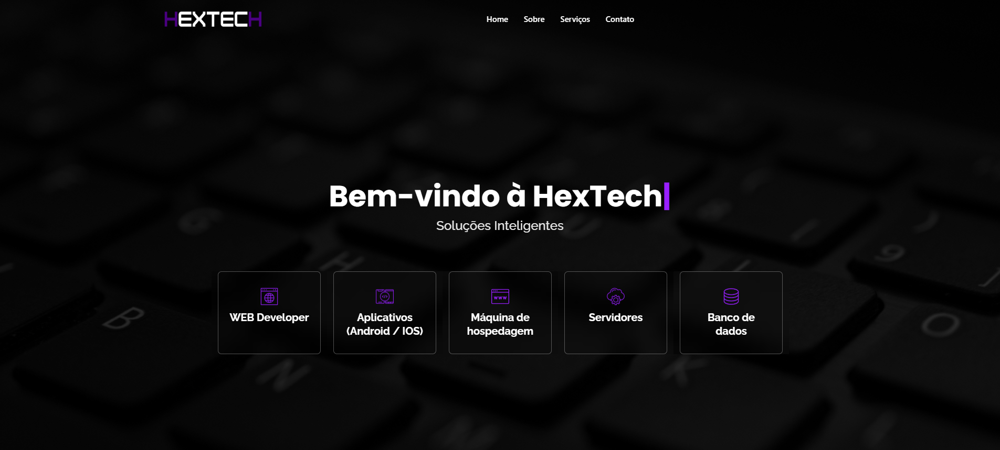
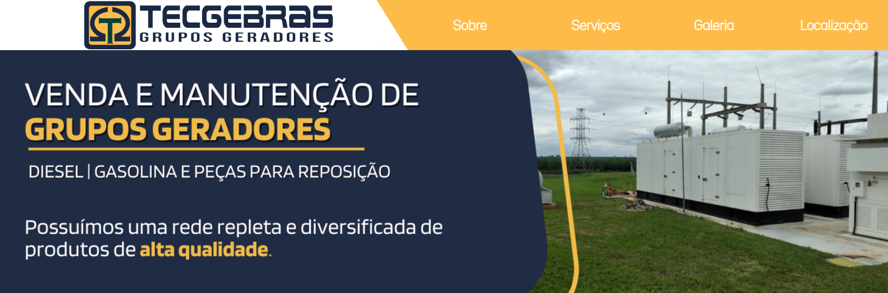
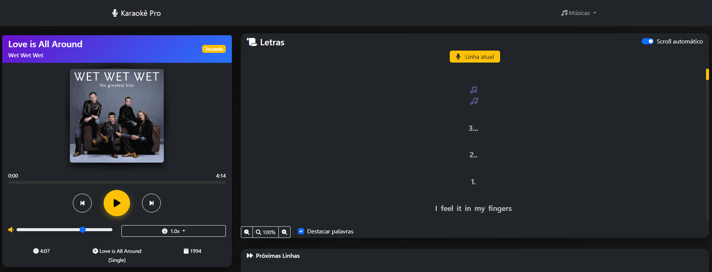
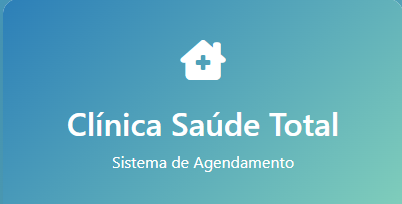
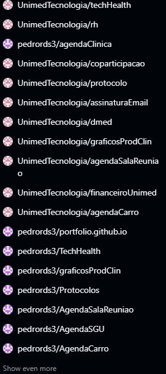

Cliente 3D em Unity
Unity 6 com URP e UI Toolkit: 4 bares, animações dos personagens e chat de voz que sai do personagem de cada jogador na mesa.
Desenvolvedor fullstack / Game dev
Brasil — 2026
Desenvolvo sites, sistemas web e jogos, do layout ao deploy. Front-end com atenção aos detalhes, back-end que aguenta produção.
Sou o Pedro, desenvolvedor fullstack com mais de 7 anos de experiência. Transformo ideias em sites, sistemas e jogos prontos para uso, do primeiro layout ao deploy.
Comecei no desenvolvimento web há mais de 7 anos e, desde então, construí de sites institucionais a sistemas internos: dashboard de automação para a área da saúde, agendamento de consultas, controle financeiro e ferramentas corporativas usadas no dia a dia de empresas.
Gosto de cuidar do produto inteiro: entender o problema, desenhar a interface, escrever o back-end, modelar o banco e colocar no ar. O Sem Contexto nasceu dessa vontade: um jogo multiplayer que fiz sozinho, dos personagens 3D ao servidor.
Hoje estou me aprofundando em segurança de aplicações e aceito projetos freelance. Também estou aberto a oportunidades com times nacionais e internacionais.
Jogo autoral · projeto solo
O jogo onde a pior resposta pode ser a melhor.
Um jogo de cartas multiplayer online para jogar com os amigos: todo mundo recebe uma frase absurda, joga a carta mais engraçada da mão e a mesa vota na melhor resposta.
São duas versões independentes: uma em 3D para PC, em que cada jogador é um personagem animal sentado à mesa de um bar, com chat de voz, e uma versão web 2D pensada para o celular, jogada direto no navegador. Desenvolvi tudo sozinho: game design, personagens 3D, interfaces, servidor em tempo real e deploy.
Versão PC / Telas
Clique para ampliar
Unity 6 com URP e UI Toolkit: 4 bares, animações dos personagens e chat de voz que sai do personagem de cada jogador na mesa.
12 animais modelados e riggados com scripts Python no Blender, cada um com 8 expressões faciais sincronizadas em tempo real.
Node.js + TypeScript via WebSocket, com validação em Zod, testes automatizados e reconexão. O cliente só envia intenções, nunca o placar. Publicado com Docker.
Interface 2D pensada para o toque: convite por link ou QR Code, salas com senha, figurinhas e chat.






Atendo projetos freelance do início ao fim, ou entro no seu time para uma parte específica. Comunicação clara, prazos honestos e código que dá para manter depois.
Sites institucionais e páginas de venda rápidos, responsivos, prontos para o Google e fáceis de atualizar.
Painéis, agendamentos, controle financeiro e ferramentas internas, com login, banco de dados e as regras de negócio da sua empresa.
Multiplayer, chat, notificações ao vivo e integrações via WebSocket, do servidor à interface.
Novas funcionalidades, correção de bugs, desempenho e segurança em um projeto que você já tem.
Como trabalho
Entendemos o objetivo, o público e o que o projeto realmente precisa.
Escopo, prazo e valor combinados por escrito, sem surpresas.
Entregas por etapas, para você acompanhar a evolução e opinar no caminho.
Publicação, explicação de como usar e suporte depois que o projeto entra no ar.
Interfaces modernas, responsivas e acessíveis.
APIs, regras de negócio, bancos de dados e tempo real.
Desenvolvimento de jogos, versionamento e deploy.
06 / Contato
Tem um projeto em mente, precisa de um freelancer ou quer conversar sobre uma vaga? Me chama no LinkedIn que eu respondo.